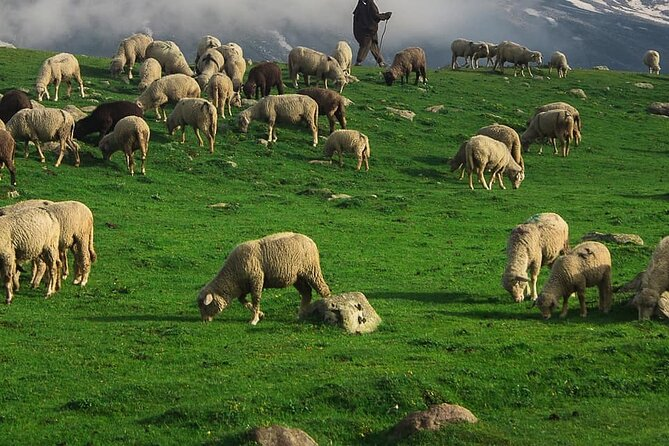
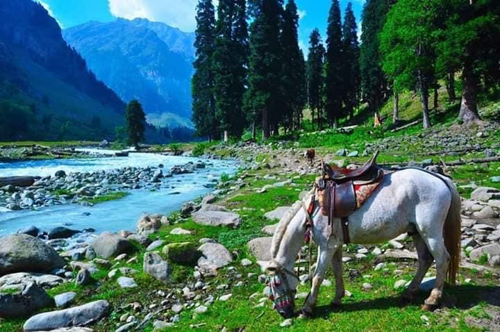
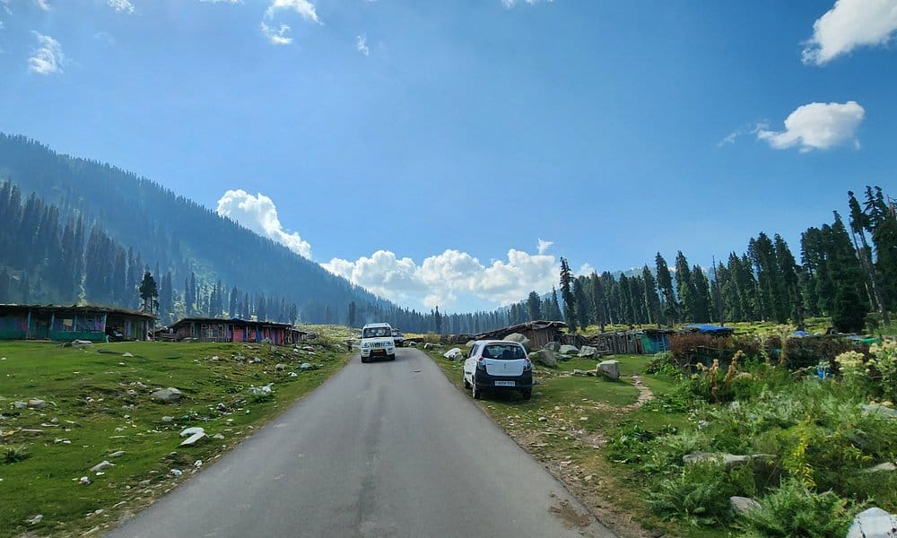
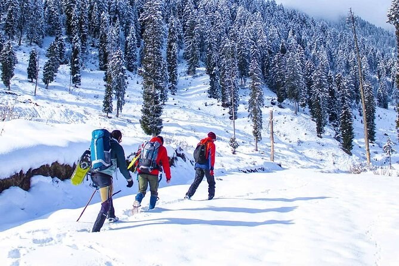
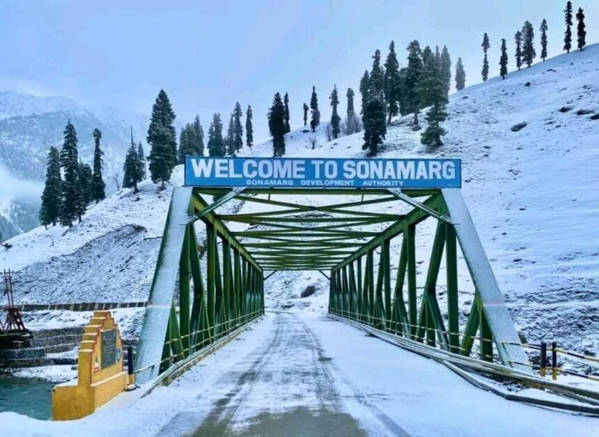
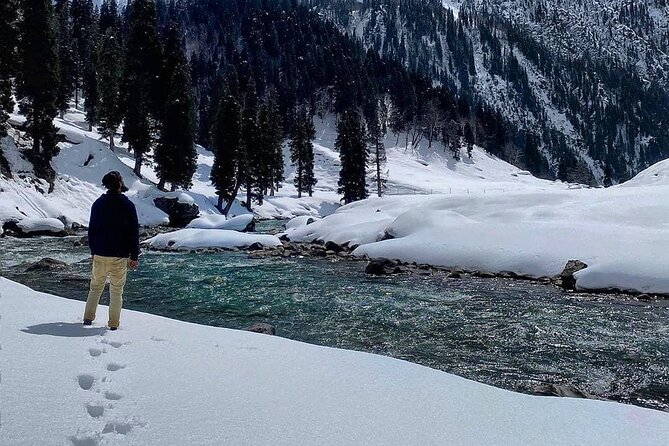
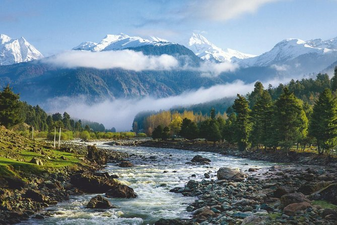
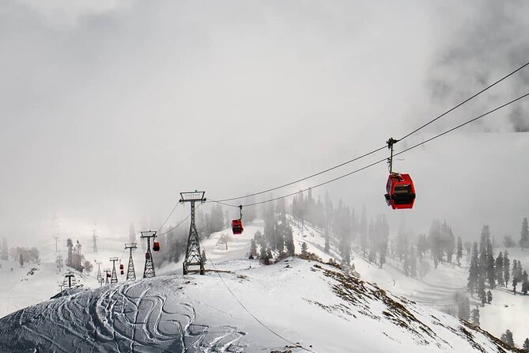

Highlights
- Experience the serene beauty of Dal Lake, including a relaxing boat ride, surrounded by floating gardens and houseboats.
- Enjoy skiing, snowboarding, or sledding in Gulmarg during the winter season, a premier destination for winter sports.
- Marvel at the scenic beauty of Pahalgam’s Betaab Valley and Aru Valley, ideal for short treks, picnics, and nature walks amidst pine forests and mountain streams.
- Explore the picturesque Sonmarg with its verdant meadows, and take an optional tour to the Thajiwas Glacier, perfect for adventure enthusiasts.
- Admire the Persian-inspired landscaping at Shalimar Bagh and Nishat Bagh, known for their terraced lawns, fountains, and vibrant flower beds.
- Discover Kashmir’s rich culture through its handicrafts, including Pashmina shawls, handwoven carpets, and traditional Kashmiri artwork.
    
  
Kashmir - Special 4 (Srinagar - Gulmarg - Pahalgam - Sonmarg) Tour
Day 1: Arrival in Srinagar
- Arrival at Srinagar airport and transfer to hotel or houseboat.
- Leisure time by Dal Lake, exploring the Mughal gardens (Shalimar Bagh, Nishat Bagh).
- Optional: A relaxing Shikara ride on Dal Lake.
Day 2: Srinagar to Gulmarg
- Proceed to Gulmarg, a renowned hill station famous for skiing in winters and scenic meadows in summers.
- Enjoy a cable car ride (Gondola) up the mountain for panoramic views of the valley.
- Overnight stay in Gulmarg.
Day 3: Gulmarg to Pahalgam
- Travel to Pahalgam, often referred to as the "Valley of Shepherds."
- Visit the enchanting Betaab Valley and Aru Valley, surrounded by picturesque landscapes.
- Opportunity for local sightseeing or short hikes around the valley.
Day 4: Pahalgam to Sonmarg
- After breakfast, travel to Sonmarg, also known as the "Meadow of Gold."
- Explore the lush green meadows by the Sindh River or take an optional trip to the Thajiwas Glacier.
- Overnight stay in Sonmarg.
Day 5: Departure from Srinagar
- Return to Srinagar after breakfast.
- Transfer to the airport for onward journey.
- Conclusion of the Kashmir Special 4 Tour.